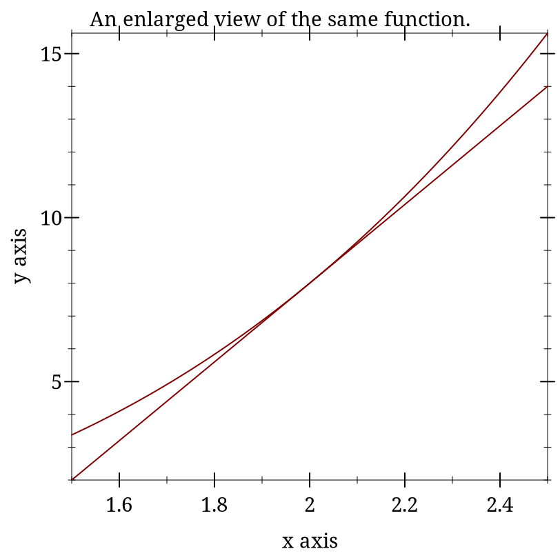

Computational Modeling for Psychology
1 Introduction and Computing Requirements
1.1 Preface
Experimental psychology was invented as a counterweight to the physical sciences. It is the difference between a science of mass and of weight, luminance and brightness. A pound of feathers has the same mass as a pound of pennies, but clearly the latter weighs more. Just try it.
To make a science of such subjective experience as to whether one thing is heavier or brighter than another there needed to be methods for human experimentation that were scientific. That is, they combined a subject matter of subjective experience with the standard procedures of empirical sciences: repeat measurements, control conditions, and systematic variation. By convention Wilhelm Wundt is taken as Empirical Psychology’s founder and 1879, the year he established his independent experimental laboratory, as the date for the founding. It is only in the 1800s that we see the emergence of scientific experiments that look like modern psychology: Weber’s weights, Helmholtz’s mercury lamp flash experiments on attention, and Wundt’s own experiments on attention.
While Wundt was merging the experimental methods of physics and physiology with the content of human awareness, it was a generation before Wundt that Weber collected the data that led Gustav Fechner, a physicist, to express mathematically a procedure for measuring psychological magnitudes as functions of physical intensities: psychophysics (Robinson 2020).
Despite this early and potent demonstration of the power of using math for achieving insight into human subjective experience, quantitative models were not frequent in psychology for the next hundred years, and even now, despite notable and influential exceptions (the Rescorla-Wagner model, developed in the context of conditioning and the source of modern reinforcement learning, Rosenblatt’s perceptrons: the font from which neural networks flowed), mathematical models form only a small portion of published psychological research. While the contemporary content of scientific psychology has greatly expanded, the predominant use of quantitative methods in psychology is still statistical inference. That reliance on statistics may be both cause and consequence for why mathematics, such as calculus and linear algebra, are not curricular requirements for many psychology undergraduate programs though statistics courses are. We are much quicker to deploy complicated statistical methodologies than to use math as the language for expressing concretely, concisely, and unambiguously our psychological theories. Nor do we use computer programs based on psychological theories to explore model implications via simulations as much as we should.
This course is intended as a corrective. It endeavors to give undergraduates who may not have had any post-secondary math courses to speak of an exposure to some of the terminology and notation for the areas of mathematics most used in psychological and neuroscience models. The course combines this exposure with a heavy dose of programming exercises to practice concrete use. The goal is to build familiarity with terms and to desensitize some of the math and computing anxiety that formula and code excerpts can induce. In addition, and perhaps most importantly, the course wants to give students practice in seeing how formal mathematical ideas can be a potent source for focusing our discussion of what key psychological concepts are.
Of course, one cannot explore computational and mathematical ideas without having some familiarity with computing basics: writing code, markup syntax for reports and documentation, and ancillary tools such as git for sharing. In years past I combined all these content areas into this single course. The heterogeneity of student backgrounds made that tough, but as there were no alternatives it was necessary. Now, however, I have split off the computing tools part from this content part. Students can and should come to this course with some basic familiarity with using their computer as a research tool. If they do not have that knowledge they can gain it from a variety of on-line sources. I outline my approach here.
Freeing this course from the constraints of teaching computing basics provides the space for including new content and teaching the older material differently. I would like both novice programmers and those with more experience programming to be able to get something from the exercises. I have explicitly decided not to use more common programming languages, such as python, so that everyone can focus on what it is we are trying to do, and not just what library can we import or what code we can find online to cut and paste? With the freedom to select any computing language I had the chance to hearken back to the early days of artificial intelligence (AI); an era when AI was about thinking and reasoning and not about how to import a model pretrained on billions of examples. By choosing a LISP I can also engage in a discussion of how programming languages differ, and how the design choices and features of a programming language may influence the expression of our theoretical ideas. Can a particular programming language lead us to new ways of thinking and conceiving of the problem space we wish to explore theoretically and via simulation?
All that is grand, but the course is still intended for undergraduates, many of whom may only possess programming rudiments. How to get them all, the Mac Users (both Intel and M1/2), as well as Windows and *Nix users, to have a common environment so that I can teach the same thing to all and so that they can get the tools installed on their computers in less than a month? Common-Lisp (CL) would be ideal, and I wrote some of the code for an earlier offering in CL, but installing CL and getting a sane working environment can be challenging. Thus, I decided to try Racket. It is a language designed to support teaching, and has the DrRacket IDE. This works pretty much out of the box on Linux, Windows, and OSX systems. It even has a documentation system, scribble, built-in, and which I am using to write this document.
The remaining question is what new content to include? So far, I plan to expand the section on neuron modeling with an additional example, the Morris-Lecar model, that gives us a chance to explore how the differential equation formulation gives us additional information about our model via visualizing the phase space.
I also can now include something more traditional in the history of computational models of mind. We can code a simple Turing machine solving the busy beaver problem. We gain familiarity with this oft cited entity, and some concrete experience with the idea of computability and halting. How much more space is left for additional models? I hope to get to the Kohonen neural network for a week too. We will see from this fresh offering if there is time.
In summary, the goals for this course and this document are to give students a familiarity with the mathematical terminology and domains that form the backdrop to modeling in psychology. I still feel some basic understanding of what certain mathematical gadgets are is important, e.g. what a differential equation is is something psychologists modeling memory should know about, but that most of them do not. They do not, most of them, need to know how to analytically solve the equations, but they should be able to use their own programmed implementation to explore the implications of their ideas. The basic constructs of linear algebra, matrices and vectors, are also critical. It is essential for implementing many common neural networks, but vector spaces also comprise a theoretical account of representation. How much I can move beyond these fundamentals now that I am not also trying to combine it with an introduction to programming is a continuing experiment as we prepare to launch the Spring 2023 offering.
Preamble Bibliography
David K. Robinson. Gustav Theodor Fechner: Psychophysics and Natural Science. Oxford Research Encylopedia of Psychology, 2020. https://oxfordre.com/psychology/psychology/view/10.1093/acrefore/9780190236557.001.0001/acrefore-9780190236557-e-487 |
1.2 Preliminaries
1.2.1 Racket
For this course we will be writing our code in Racket. Racket is in the category of LISPs, and is a descendant of Scheme. These languages are in the tradition of good old fashioned AI (GOFAI). Their heritage is in symbolic computation, and connects programming with formal models of computation such as the λ calculus. Knowing an example of this language family is good for developing programming knowledge and helping to see the big picture. Programming is more than a particular language or syntax, it is a medium for expressing ideas. Learning more than one way to express oneself programmatically helps to abstract the message out of the medium. Racket offers the practical advantage that it comes with good support for all popular operating systems and most hardware. Racket incorporates a picture aware integrated development environment with syntax highlighting and has long been a staple of programming education with extensive tutorial material. At the same time Racket is a modern programming language in which one can write "production" code (though admittedly few do). It is touted as a programming language for writing programming languages, thus a student fully familiar with Racket can do more than most when it comes to coding. Though it is not the language of choice if one wants to get a job, it’s selection here emphasizes our perspective on trying to understand the nature of the methods more than how to scale them or optimize run-time efficiencies.
1.2.1.1 Getting Racket
Go to racket-lang.org and download and install the proper version for you operating system
Verify you can open Dr. Racket
Verify that Dr. Racket works by entering a simple instruction in the top window and seeing it executed in the bottom window
Figure 1: The Dr Racket IDE with a #lang line and some simple code

Submit your screen shot of your Dr Racket IDE with your name to the appropriate Dropbox on Learn.
1.2.2 Git
This book and the code it uses is in a git repository. Currently the git repository for this book is hosted on github. Make sure you have the racket-book branch selected. You are free to look at other branches, and you may find some interesting code or examples there from earlier offerings of the course, but the branch that we will be using for the Fall 2022 term is the racket-book branch.
Git is a program for version control, and is very useful. Github is one of a few different hosting hubs where many developers host their code to make it visible to others. You can fork and clone the code of others to try out their software or make your own changes to it.
I tried to explain all this once in a video. If you are already very confused it will not make things worse, and if you are only mildly confused it might help.
1.2.2.1 Getting Git
To make sure you have, and will be able to update, the code and material for this course you will need to clone this repository. If you wish to be able to make contributions to this course via a pull request you will first need to fork this repo. To that you should,
Get a program for using git on your operating system installed,
Clone (and possibly fork) this repository
Demonstrate that you are tracking the correct branch.
One way to do this is to run the git branch –verbose and git remote –verbose commands from the terminal, take a screenshot (on my linux system I use the terminal screen shot library scrot).
Submit the screenshot of the output to the Dropbox on Learn.
1.2.3 Scribble
Scribble is the Racket documentation tool. The course material is being written in it. It is quite powerful right out of the box without too much tweaking, but to get more advanced features functioning well you may have to do some searching and import a number of additional racket packages. It is a version of a markup language (markdown is another common markup language and jupyter notebooks are yet another version of the same idea).
The advantage of these tools is that they allow you to blend both code and text in a single document. You can explain what you are doing as text with links and images like you would in a document. You can also include code like you would in a program. The code can be both written out like a quotation or actually run with the results of the code actually input into a document. This allows the possibility of literate programming or reproducible research reports or what we are doing here: treating the code as another type of data (like our words and references and images and videos) that we use to express our ideas as clearly as we can. I find the babel system of org-mode to be the best of the bunch, but unfortunately it does not support Racket well.
Some of the course assignments will require you to submit a scribble document. You can start out writing a simple scribble document in the Dr Racket IDE and using the examples on the Racket language website. I have also included in this repository a template scribble file that includes a number of imports and has also been exported to html so that you can better understand what the scribble commands look like and what they are supposed to look like when you compile them (template file explained and compiled).
2 What is Computation and is Cognition Computable?
2.1 What Is Cognition?
The technical challenges for modeling in psychology are mastering the mathematics and programming necessary to formally express an idea and to implement a simulation to examine the consequences. The conceptual challenge is to decide what it is you are modeling. Is a mathematical formula that reproduces an observed behavioral pattern a model? In the late 1800s Ebbinghaus, using creative, and for their time, innovative, Herculean methodologies, demonstrated that the proportion of items retained in memory declines predictably over time. The form of the forgetting curve is exponential.
Figure 2: Forgetting Curve - Wikipedia
2.1.1 Cognition is ...
Which of these opinions, if any, do you agree with and why?
Cognition Section Bibliography
Tim Bayne, David Brainard, Richard Byrne, Lars Chittka, Nicky Clayton, Cecilia Heyes, Jennifer Mather, Bence Ölveczky, Michael Shadlen, Thomas Suddendorf, and Barbara Webb. What Is Cognition? Current Biology 29, 2019. https://doi.org/10.1016/j.cub.2019.05.044 |
2.2 Is Cognition Computational?
2.2.1 Motivating questions:
Is there anything a human can think that a computer cannot compute?
What does it mean for a function to be "computable"?
What does it mean to say that cognition is computational?
What implications does the answer have for modeling cognition?
2.2.2 Introduction
Is there a difference between computational cognitive neuroscience and cognitive computational neuroscience (Naselaris et al. 2018)? The former seems to suggest that we are interested in explaining cognition directly from the actions of neurons and then using computational tools as adjuncts to aid this attempt. On the other hand, when you reverse the order it seems as if you are trying to explain thinking via the computational accounts of neuronal function. The latter seems to require a clear link between notions of computation and models of thinking. To use Marr’s three levels as a scaffold (McClamrock 1991) This reference is an older one, and not the original, but it does use LISP as its example, so it seems to relate nicely to the programming language we are using for our exercise., we are taking neurons as our implementation, positing algorithms for them, and assuming that computational principles populate the level of our cognitive abstractions. Measures of success depend on the meanings of terms.
In all of this is the basic idea that if you want to understand mind you need to develop a theory (and understand what that word means), express your theory clearly, for which the best language is math, and then explore the implications of your construction via simulation, which requires the writing of code. Mind → Theory → Math → Code. Let’s explore a little more what is implied by this pathway. What it means to use computing as a model for mind.
2.2.3 Computing in Minds and Computers
One definition of whether something is computable is whether there exists a Turing Machine that computes it. That Turing machine must halt. Since one cannot decide in advance for all machines whether they will halt or not it turns out that whether or not something is computable is, in general, undecidable.
Although most of us learned the name "Turing" in the context of whether a computer has human intelligence, the so-called Turing test, the model of Turing computability emerged from thinking about humans computing (Turing 1936). A nice short version of this history can be found in this pdf.
2.2.3.1 Classical Computational Theory of Mind
The classical computational theory of mind says that in all important ways the mind is like a Turing machine. If we want to model (or emulate) functions of mind one way would be to build a Turing machine. However this can be a practical challenge, and one can question the insight gained from this approach. Still given the theoretical and practical prominence given to Turing computability it behooves us to know what a Turing machine truly is.
2.2.3.1.1 What is a Turing machine? Some Background and Details
a finite alphabet,
a finite set of states,
the capacity to read and write to a single location in memory, and the ability to adjust the memory location immediately left or right or to make no move at all, and
a set of instructions (or "machine table") that translates the combination of the current state and the current symbol to a new state and one of the acceptable actions.
Other models of computation are the lambda calculus and the theory of recursive functions. Those alternative accounts of computability are interesting, and may offer more insight or be more practical in some situations, but it appears to be the case that they are equivalent. Anything designated "computable" by one of these formal accounts is computable by the others as well. Does this mean that if you accept the computational mind hypothesis you must accept that the mind is able to be simulated by a Turing Machine? As a consequence does this mean that minds are multiple realizable?
Are Turing machines digital?
Is this an important distinction?
Does this mean that analog computations are omitted?
Would an analog paradigm be a better match to modeling mental activity?
2.2.4 Programming a Turing Machine: the Busy Beaver
The following is a slightly formatted version of the Wikipedia description of a Turing machine.
A Turing machine has n "operational" states plus a Halt state, where n is a positive integer, and one of the n states is distinguished as the starting state.
The machine uses a single two-way infinite (or unbounded) tape.
The tape alphabet is {0, 1}, with 0 serving as the blank symbol.
- The machine’s transition function takes two inputs:
the current non-Halt state,
the symbol in the current tape cell,
- and produces three outputs:
a symbol to write over the symbol in the current tape cell (it may be the same symbol as the symbol overwritten),
a direction to move (left or right; that is, shift to the tape cell one place to the left or right of the current cell), and
a state to transition into (which may be the Halt state).
We will use it to guide us to write a simple instance that computes a solution to the Busy Beaver problem. A n-state Turing machine has (4n + 4)2n states. The formula is (symbols × directions × (states + 1))(symbols × states). The transition function (how to figure out where to go next may be seen as a finite look-up table. Each row of the table is a 5-tuple: (current state, current symbol, symbol to write, direction of shift, next state). Our goal with the Busy Beaver problem is to run our machine to produce as long a series of uninterrupted ones as we can and halt.
What it means to "run" a Turing machine is to start in the starting state with the current tape cell being any cell of a blank (all-0) "tape", and then iterate the transition function. If the Halt state is entered then the number of 1s remaining on the tape is called the machine’s score. Different transition rules will give us different outputs, so we can score our machine based on its performance.
To restate in a more general way, the n-state busy beaver (BB-n) game is a contest to find an n-state Turing machine having the largest possible score — the largest number of 1s on its tape after halting. A machine that attains the largest possible score among all n-state Turing machines is called an n-state busy beaver, and a machine whose score is merely the highest so far attained (perhaps not the largest possible) is called a champion n-state machine (This ends the lightly edited Wikipedia quote).
2.2.4.1 Why Use the Busy Beaver Problem As an Example?
The Busy Beaver Problem is non-computable
The busy beaver problem is to compute the maximum number of 1’s that a Turing machine can write before halting with the number of states equal to n. This webpage includes the proof of the non-computability of the busy beaver problem. It uses contradiction, and like most proofs relying on contradiction I find it head warping, but there it is.
2.2.4.2 A Busy Beaver Warm-Up
A simple version of the Busy Beaver problem, and one you can do by hand with pencil and paper, is the n=2 version. Create a Turing Machine with the following transition rules:
a0 → b1r
a1 → b1l
b0 → a1l
b1 → h1r
2.2.5 Busy Beaver Problem Demo Code
(struct turing-machine (state tape head-location) #:transparent #:mutable)
There is some inelegance here to handle the fact that we are not, in fact, starting with an infinitely long tape and want to build it on the fly.
(define (move-left temp-tm) (let ([loc (turing-machine-head-location temp-tm)] [lst (turing-machine-tape temp-tm)]) (if (= loc 0) (set-turing-machine-tape! temp-tm (cons 0 lst)) (set-turing-machine-head-location! temp-tm (- loc 1)))))
(define (move-right temp-tm) (let ([loc (turing-machine-head-location temp-tm)] [lst (turing-machine-tape temp-tm)]) (when (= (+ loc 1) (length lst)) (set-turing-machine-tape! temp-tm (append lst (list 0)))) (set-turing-machine-head-location! temp-tm (+ loc 1))))
(define (move tm dir) (cond [(equal? dir 'left) (move-left tm)] [(equal? dir 'right) (move-right tm)] [else (error "illegal direction")]))
(define (tm-equal-state-value tm state value) (and (equal? (turing-machine-state tm) state) (= (list-ref (turing-machine-tape tm) (turing-machine-head-location tm)) value)))
(define (upd-tape-location tm value) (set-turing-machine-tape! tm (list-set (turing-machine-tape tm) (turing-machine-head-location tm) value)))
(define (pretty-print-tm tm) (display (format "state:~a, tape: ~a, head: ~a\n" (turing-machine-state tm) (turing-machine-tape tm) (turing-machine-head-location tm))))
(define (rule tm) (cond ((tm-equal-state-value tm 'a 0) (set-turing-machine-state! tm 'b) (upd-tape-location tm 1) (move tm 'right)) ((tm-equal-state-value tm 'a 1) (set-turing-machine-state! tm 'b) (upd-tape-location tm 1) (move tm 'left)) ((tm-equal-state-value tm 'b 0) (set-turing-machine-state! tm 'a) (upd-tape-location tm 1) (move tm 'left)) ((tm-equal-state-value tm 'b 1) (set-turing-machine-state! tm 'h) (upd-tape-location tm 1) (move tm 'right))))
(define (busy-beaver-2-do tm) (pretty-print-tm tm) (do ([i 0 (+ i 1)]) ((equal? (turing-machine-state tm) 'h) (display (format "Loops equaled ~a\n" i))) (rule tm) (pretty-print-tm tm)) tm)
(begin (require "./code/tm.rkt") (define initial-turing-machine (turing-machine 'a (list 0) 0)) (define working-tm (struct-copy turing-machine initial-turing-machine)) (busy-beaver-2-do initial-turing-machine))
state:a, tape: (0), head: 0
state:b, tape: (1 0), head: 1
state:a, tape: (1 1), head: 0
state:b, tape: (0 1 1), head: 0
state:a, tape: (0 1 1 1), head: 0
state:b, tape: (1 1 1 1), head: 1
state:h, tape: (1 1 1 1), head: 2
Loops equaled 6
(turing-machine 'h '(1 1 1 1) 2)
2.2.5.1 Testing the Busy Beaver Code
The code typed above can be found at ../code/tm.rkt. Open DrRacket. Open this file (you can use the navigate to it with DrRacket’s built-in file manager if the link does not work for you). Click run. You should seen no error messages (or much of anything else). Now add the code "(busy-beaver-2-do initial-turing-machine)" to the bottom of the file, and re-run the file. You should see the output typed above in the lower, execution, window.
In your editor make a copy of this file with a new name. Test that you can edit the code by changing the line of what to do with ’a 0 to transition to ’h instead of ’b. Save and re-run. You should halt after the first state. If that is working, you have the basics functioning and now can tackle the homework.
2.2.5.2 Busy Beaver Homework
Come up with a version of rules for n=4. All you will need to edit is the rules section. Everything else should just work. After you are satisfied create a new function for busy-beaver-4-do that uses your new rule. Add the line invoking it to your file. That will allow me to run your racket program from the command line and see the results of your rule in my terminal. You can test this yourself by running "racket <your-name>-busy-beaver-4-do.rkt" when you are in the home directory of your program.
I will run your programs against each other in class (hopefully). Don’t try and break any records, but do spend sometime trying to get the numbers up. We are learning about Turing machines and how to write code the implements mathematical and theoretical ideas for the elucidation of cognition. Spending too much time perfecting your Busy Beaver implementation misses the point, but just getting something that works without crashing doesn’t give you enough chance to think about this model of computation. This will also give you a chance to start to learn the racket language a little bit.
2.2.5.3 Resources
This tutorial article with examples has a nice visualization. If you are having a little trouble getting started busy-beaver might help.
Why the Busy Beaver? Because the solution to this problem is noncomputable. What does it mean that we are solving this with our computers and our own reasoning, but that the problem itself is not computable? Does that present any hurdle at all for using the Turing Machine as a model of mind?
2.2.6 Optional Material
Someday some of this material may make it into the regular portion of the course. For now, it is simply left here as a guide to additional topics that one may want to think about when engaged in cognitive computational (neuroscience) modeling.
2.2.6.1 Functionalism
One of the schools of thought in the domain of Philosophy of Mind, functionalism comes up a lot in computational modeling. It suggests that if you know what something does, what its function is, you know the important stuff. You don’t need to think about mental states in terms of what they are as "things". You might think about them in terms of what they "do". Mental states serve a functional role in a cognitive system. The important thing is how they relate to the sensory input, motor output and to each other.
Food for Thought Question: If you accept that the mind is a computational machine, and that for all computable problems an equivalent Turing machine exits, does that require you accept that any functionally equivalent computational system, regardless of its hardware (i.e. it could be vacuum tubes or the population of China) would be a mind?
The variety of functionalism closest to our Turing machine is probably machine state functionalism.
After you familiarize yourself with functionalism, you might return to the question above and revisit your answer.
2.2.6.2 Is the Computational Account of Mind Trivial?
Any sufficiently complex physical system (such as the molecules comprising the wall behind me or the brain) can be shown to be isomorphic to the formal structure of any program. If you view the mind as a program than you might as well say that you and the wall behind you share the same thoughts.
There is no room for the time scale to matter and there is an intuition that it should. We could implement a Turing machine with water wheels, levers & pulleys, vacuum tubes, or transistors. The speed with which the resulting machine computes will be very different, but they will all perform the same computation. Do we think that a model of mind that is blind to time scale can possibly be right?
Discrete or continuous. Turing machines are discrete, finite state machines. Time and thought operate in continuous time (don’t they?). Are discrete models that move forward in time in discontinuous steps capable of modeling us who live in and think in the world of continuous time?
Computations might model something without explaining it. Weather simulators predict rain, but they don’t themselves actually rain. Flight simulators do not fly. Even if a computer program simulated a mind it does not mean it would be thinking. Does the simulations, explanation or demonstration distinction bother you?
2.2.6.3 What Would a Non-computational Theory of Mind Be?
2.2.6.3.1 Logical Behaviorism
Mental states are predispositions to behave. There is no internal state corresponding to belief that is mental. Belief is only a predisposition to behave in a certain way in a certain context. We characterize people by what they are likely to do without ascribing to them associated mental states. The person who first developed this idea, Gilbert Ryle, asserts that being a mentalist is incompatible with being a realist (that is it makes you a dualist). Logical behaviorism does not seem to be much in vogue now, but it is another take on the important issues (Schütte 2008).
2.2.6.3.2 Type-Identity Theory
Mental states just are brain states. Since our brains are different from time to time (synaptic weights change; cells die (and a few born)) does that mean we never have the same mental state twice? Since no two people have the same brain does that mean no two people ever have the same mental states?
2.2.6.4 Alternatives to the Turing Machine Model of Computation
Although the Turing Machine account of computation seems to dominate examples in psychology and neuroscience this may be an artifact of the example of the Turing Test as a prominent example of evaluating machine intelligence. There are other formal theories of computation, and as stated above they are all conjectured to be equivalent. The one I describe below has had a large influence on programming language design. It was the mathematical idea that motivated the development of LISP, which via its descendent Scheme, became the Racket language we are using in this course.
2.2.6.4.1 Lambda Calculus
The lambda calculus was developed as a theory of functions. John McCarthy invented Lisp as a theoretical exercise for working on the theory of computable functions. He felt the Turing machine to be too mechanical and too awkward for this work, and wanted a better tool, a better metaphor. He adopted the lambda of the lambda calculus and the ~eval~ function to take in lisp programs and execute them. Later one of his collaborators observed that it was relatively straightforward to implement this as a real programming language. A bit more of the history is here. But in order to try and learn a bit of the lambda calculus you might look at (Michaelson 2011)
Why a "lambda" (λ)? The λ of lambda calculus doesn’t really mean anything. It just signals that you have a lambda expression. Its creation as the symbol for the function calculus was an accident of notation and the limits of older typewriters.
Some Details and Interesting Facts about the Lambda Calculus
There is not just one lambda calculus.
To have the lambda calculus you need to specify your algebra. What are the rules for reducing things (i.e. your computations), what are the allowed symbols, and what do things mean? A "lambda calculus" is a way of handling "lambda expressions."
Into the Weeds
Want to implement the lambda calculus yourself on a computer (using Common Lisp)? Check out this blog post.
Terms are either simple variables x or y or composite terms \lambda~v~t_1. Having two terms next to each other (~t_1~t_2) means "apply" t_1 to t_2. The meaning of a term like \lambda~v~.~ t_1 is the value returned by the lambda abstraction. The meaning part is sometimes designated in writing by formulas using arrows, such as t_1~\rightarrow~t_2.
Beta reduction
Beta abstraction
Alpha conversion
Eta reduction
Normal Form
The equivalent of the halting problem for the Turing machine is the reaching of a normal form in the lambda calculus.
Functions have the form λ <name> . <body>
Note the "dot". This separates the name from the body of expressions that it names.
<body> is also an expression (note the recursion that is built in).
Write the lambda expression for the identity function? What is the identity function?
Apply the identity function to itself.
What is the identity function in Racket?
- An interesting lambda expression is the "self-application" expression:\lambda~s . (s~s).With pencil and paper try to
apply this to the identity,
apply the identity to the self-application,
apply the self-application to itself. What is its termination status?
Computational Cognition References
R. McClamrock. Marr’s three levels: A re-evaluation. Minds and Machines 1, pp. 185–196, 1991. https://doi.org/10.1007/BF00361036 |
Greg Michaelson. An introduction to functional programming through Lambda calculus. Dover Publications, 2011. https://www.cs.rochester.edu/~brown/173/readings/LCBook.pdf |
Thomas Naselaris, Danielle Bassett, Alyson Fletcher, Konrad Kording, Nikolaus Kriegeskorte, Hendrikje Nienborg, Russell A Poldrak, Daphna Shohamy, and Kendrick Kay. Cognitive Computational Neuroscience: A New Conference for an Emerging Discipline. Trends in Cognitive Sciences 22, pp. 365–367, 2018. https://dx.doi.org/10.1016/j.tics.2018.02.008 |
Michael Schütte. Logical Behaviorism. Encyclopedia of Neuroscience, pp. 372–375, 2008. http://dx.doi.org/10.1007/978-3-540-29678-2_596 |
A. M. Turing. On computable numbers with an application to the Entscheidungsproblem. Proc. London Math. Soc. 42, pp. 230–265, 1936. |
3 Differential Equations and Spiking Neuron Models
3.1 Differential Equations and Spiking Neuron Models
3.1.1 Goals
Why are Differential Equations an important technique for computational modelling in psychology and neuroscience?
Work on the modeling of the action potential eventually resulted in Nobel Prizes. The Hodgkin-Huxley equations that resulted from this work are differential equations. Subsequent models, even very marked simplifications such as the Integrate and Fire model, are also differential equations. When you rely on a simulation software that allows you to create populations of such neurons you are using, at least indirectly, a differential equation. It is worth knowing what they are.
Exponentials show up a lot in neuroscience and psychology. When you see a rate of change in a quantity that is proportional to the magnitude of that quantity there is an exponential hidden in there somewhere.
Further, modern computers and their powers mean that we can often use differential equations in our models by naively implementing their effects as a series of very tiny steps. We might gain insight if we knew more about how to solve differential equations analytically, but often, if our goals our practical, that is running a simulation to see the result, we can be ignorant of differential equations at that level, and just deploy them as another practical tool. Just like you can now use software to implement Monte Carlo simulations in statistics without knowing the full details of the theory mathematically.
This gives us the following goals for this section:
Learn what a Differential Equation is as a mathematical entity,
Get an intuition for differential equations by thinking of them as slopes,
Learn how they emerge as a natural effort to account for changing quantities in neuroscience and psychology,
Put this altogether by writing programs to implement the integrate and fire point neuron model and a version of the Hodgkin-Huxley neuron model.
In preparation for things to come you might try to remember (or look up) what is the integral of one over x? In symbols, what is \int \frac{1}{x}~ dx?
3.1.2 The Action Potential - a very short review
Our goal is to use differential equations in code written to simulate spiking neurons. Therefore, we ought to remind ourselves about the basics of what is a neuronal action potential.
What are the axes?
What ion causes the upward deflection?
What causes the repolarization?
Who discovered the action potential?
Who won the Nobel Prize for characterizing the ionic events of the action potential experimentally and building a mathematical model?
Did you draw this?
An aside: Notation
Mathematics is full of notation. And one person’s notation is another person’s jargon. The key thing is not to let yourself be scared off. Often the motivation for mathematical notation is just convenience: condensing something that would take a long time to say or write into an abbreviated form. It is the equivalent of saying "meh" or "lol". Mathematical notation is just a technical emoji. You probably know the mathematical idea that is being represented; you just don’t know the abbreviation that is being used. So, just like you can teach grandma the meaning of TMI you can with a little bit of practice get used to the Greek symbols that appear so often in mathematical presentations.
As a first exercise, write out in long hand what is meant by the following:
3.1.2.1 Multiple Ways to Say the Same Thing
Another thing to note about mathematical notation is that it often provides more than one way to say the same thing. Which notation is used depends on context and the technical community the work is intended for. Computer scientists frequently use i as a variable for indexing a loop. To the mathematician it is the complex part of an imaginary number i~=~\sqrt{-1}, but engineers use j instead. Here are some of the many different ways you may see the derivative depicted.
Leibniz notation: \frac{dx}{dt}
Physicists often use this for derivatives with respect to time (t): \dot{x}
Mathematicians often use the variable itself as a representation for the function and use the number of "primes" to indicate how many derivatives to take: x’
Or they may make the variable representing the function explicit if they think that will make their reasoning clearer in the present context: f’(x)
This is called operator notation. You won’t see it as much, but when doing certain kinds of proofs or reasoning more abstractly it can be much more convenient: D~f
3.1.3 Derivatives are Slopes
There may be many ways to write out the notation for a derivative, but the uniting concept behind them is as "rates of change." They are essentially just the slopes you learned about in secondary school. The old "rise over run" where the length of the run is made very, very small.
You might want to pause here and make sure you remember what a slope is.
Can you write the equation to find the slope of a line?
How would you apply this to a curve and not a line?
When in doubt return to definition. What is the definition of a slope of a function?
3.1.3.1 Use your computer as a tool for exploration
Demonstrating something mathematically can give a great deal of satisfaction and ultimately is the guarantor of whether something is correct. Often we want to know more than whether something is correct in the abstract, we want to see specific examples. Sometimes pencil and paper are the best approach, but often we can do the same thing more quickly and more extensively by using our computer. Let’s digress to use our computer for visualizing ideas about slopes. You should try to get these to work in Dr. Racket.
> (begin (define xs (list 1 2 3 4 5)) (define ys (list 2 4 6 8 10)) (plot (lines (map vector xs ys)) #:title "A Line: What is it's slope?"))
> (plot (list (function (lambda (x) (expt x 3)) (- 3) 3) (function (lambda (x) (- (* 12 x) 16)) 1 3)) #:title "A curve (of what?) showing the slope at a point.")

Derivatives are Instantaneous Slopes
These plots are intended to demonstrate the idea that locally everything is linear. If you calculate the slope for your curve exactly like you do for a line you will get something that starts to look more and more like a line the smaller your "run" gets. The idea is that you pick two points that are "close enough" and your derivative becomes "close enough." At least with a computer. Mathematically, you just keep going to the limit.
3.1.4 Using Derivatives to Solve Problems With a Computer
3.1.4.1 What is the square root of 128?
We want to know the value of x that makes 128 =x^2 true?
Always use the computer for the busy work when you can. Your computer can solve many mathematical problems for you. For example, requiring symalg we can programmatically find that the derivative of x^2 is 2 x. Look at the code for this margin-note and you will see how I computed that with racket (and then typeset it).
Come up with a guess.
Calculate the error.
Adjust your guess based on the error.
This adjustment will use the derivative.
3.1.4.1.1 Working Through an Example
Let’s say we want to solve for x when x^2 = 128. How might we start? When in doubt, guess!
How much is your guess off?
What we want to do now is adjust our guess. Since we know how much our function changes its output for each adjustment in the input, How do we know this? Our derivative is a rate of change. we can revise our guess based on this necessary adjustment. If we are still wrong, we just repeat the process.
To get there let us consider representing the ratio of how our function’s output changes for changes in input. We can just make things concrete.
If you take a look at the definition of the derivative (equation D) above you will see the resemblance, except for the absence of the limit. When trying to solve this problem we don’t initially know both inputs, but we do know that when we put in the solution to our problem we will get 128. And we also know that we can compute the derivative. A bit of rearranging and renaming give us.Can you map the steps I took to get this equation from the one above?
> (define (df g) (* 2.0 g))
> (define (update-guess g target) (/ (- target (expt g 2.0)) (df g)))
> (define (my-sqrt [target 128.0] [guess 7.0] [tol 1e-6]) (let* ([udg (update-guess guess target)] [current-guess (+ guess udg)]) (if (< udg tol) current-guess (my-sqrt target current-guess))))
(my-sqrt 55.0 4.0)]
What is a cube root?
What is the derivative of x^3?
Write a Racket program to computer the cube root of a give number.
3.1.4.2 Practice Simulating With DEs
3.1.4.2.1 Frictionless Springs
We want to code neurons, but to get there we should feel comfortable with the underlying tool or we won’t be able to adapt it or re-use it for some new purpose. I don’t want to give you a fish. I want to teach you how to fish.
By working with an example simpler than a neuron, and one for which you might have more intuition, such as a simple spring or "slinky" I hope you will get a better feel for how the numbers, equations, and code all relate. Then we can move on to the neuronal application.
The equation of a frictionless spring is:
where ’s’ refers to space, ’t’ refers to time, and ’P’ is a constant, often called the spring constant, that indicates how stiff or springy the spring is.
Imagine that we knew this derivative. It would tell us how much space the spring head would move for a given, very small, increment of time. We could then just add this to our current position to get the new position and repeat. This method of using a derivative to iterate forward is sometimes called the Euler method.
Returning to our definition of the derivative:
But our spring equation is not given in terms of the velocity it is given in terms of the acceleration which is the second derivative. Therefore, to find our new position we need the velocity, but we only have the acceleration. However, if we knew the acceleration and the velocity we could use that to calculate the new velocity. Unfortunately we don’t know the velocity, unless ... , maybe we could just assume something. Let’s say it is zero because we have started our process where we have stretched the spring, and are holding it, just before letting it go.
How will our velocity change with time?
And we have a formula for this. We can now bootstrap our simulation.
Note the similarity of the two functions. You could write a helper function that was generic to this pattern of old value + rate of change times the time step, and just used the pertinent values.
How do we know the formula for acceleration? We were given it in Equation S above.
> (require "./code/spring.rkt")
> (begin (define spring-results (release-spring)) (plot (lines (map vector (map fourth spring-results) (map third spring-results)))))
3.1.4.3 Damped Oscillators
Provide the code for the damped oscillator. It has the formula of
This should really only need to change a couple of lines to update the model to be able to handle the damped version as well. You might want to edit spring.rkt.
3.2 Integrate and Fire Neuron
In this section we take a look at the history and math of the computational model of neuron firing called "Integrate and Fire" (I&F). The I&F model uses math essentially the same as the spring example.
Is the integrate and fire model used much in modeling in the present time.? Answer.
3.2.1 History of the Integrate and Fire Model
3.2.1.1 Louis Lapicque - Earlier Computational Neuroscientist
Modern Commentary on Lapique’s Neuron Model

Original Lapique Paper (scanned; pdf)
Brief Biographical Details of Lapicque.
3.2.1.2 Lord Adrian and the All-or-None Action Potential
One of the first demonstrations of the all-or-none nature of the neuronal action potential was made by Lord Adrian. Lord Adrian was an interesting scientific figure. He asserted that some of his prowess at electrophysiology stemmed from his interest in and training in fencing.
When was the action potential demonstrated?
What was the experimental animal used by Adrian?
Want more details? There is an excellent free book available Spiking Neurons. They also have another more modern book out too Neuronal Dynamics.
3.2.2 The Integrate and Fire Equation
While Hodgkin and Huxley provided the first robust computational model of the neuronal action potential their model is quite complex, as we will soon see. Is all that complexity necessary? That of course depends on the nature of the scientific question, and if we are primarily interested in whether a spike has or has not occurred, and not the ionic events that produced the spike, we may find our experimental questions dealt with much more concisely by a much simpler model of neuronal spiking: the leaky integrate and fire model.
The formula for the leaky integrate and fire neuron is:
In the next sections we will describe how this simplification came to be, and use it as the basis for learning some of the elementary electrical laws and relations upon which it is based.
3.2.2.1 Electronics Background
The following questions are the ones we need answers to to derive our integrate and fire model.
What is Ohm’s Law?
What is Kirchoff’s Point Rule?
What is Capacitance?
What is the relation between current and charge?
3.2.2.2 Formula Discussion Questions
To understand our formula clearly we should review the meaning of the key symbols and notation.
What does \frac{dV}{dt} mean?
What does \frac{1}{\tau} mean?
Why does the voltage term on the right have a negative sign?
What is I(t)?
To derive our equation we need to put all these fact together.
We recall that just like we used the derivative to help us figure out where the spring would be some small increment of time into the future, we use the same approach to compute our future voltage. That future voltage will also include a term that reflects an additional current that we have "experimentally" injected.
Can you tell why, looking at the integrate and fire equation, if we don’t reach the firing threshold, we see an exponential decay?
Deriving the IandF Equation
a: Kirchoff’s point rule,
b: the relationship between current, charge, and their derivatives
c: Ohm’s law
d:multiply through by R
e: rearrange and define \tau
3.2.2.3 Coding up the Integrate and Fire Neuron
Most of the integrate and fire implementation is conceptually and practically identical to the spring example. You assume a starting voltage (initial state) and then you update that voltage using the differential equation for how voltage changes with time (\frac{dV}{dt}).
There is one critical difference though. Unlike real neurons the Integrate and Fire neuron model does not have a natural threshold and spiking behavior. You pick a threshold and everyone time your voltage reaches that threshold you designate a spike and reset the voltage.
What I added below is a strictly cosmetic amendment that changes the first value after the threshold to a number much higher than the threshold so that when plotted it creates the visual appearance of a spike.
3.2.2.3.1 Class Exercise: Adding a refractory period to the Integrate and Fire model
What is the refractory period for a neuron?
In class make sure you can get the integrate and fire model working in Dr. Racket. After you get the basic model working trying altering the input current to see how that affects the number of spikes and the regularity of their spiking.
Next, change the form of the input current to be something other than a constant. I suggest trying a sine wave. This will give you a chance to sample some of racket’s potential.
Find out how to take the sin of a number. Then learn how to map the sin function over a list of numbers. If you use in-range you can create a stream of numbers from a minimum to a maximum for a given step size. Then you may want to shift up or scale all the numbers to make them non-zero. This could be done by mapping again. The map function is very powerful and allows you to avoid writing a lot of lengthy looping code.
After you have done that edit the code to include a refractory period. First, decide on the logic of how to do this and only after that start editing the code to implement it.
The next examples walk through the code and describe some of the ideas.
(define dt 0.05) (define max-t 10) (define init-t 0.0) (define start-time 1.0) (define stop-time 6.0) (define cap 1) (define res 2) (define threshold 3.0) (define spike-display 8.0) (define init-v 0.0) (define voltage init-v) (define injection-current 4.3) (define injection-time (cons start-time stop-time)) (define tau (* res cap))
This is a good habit to develop with your code. Do not "hard code" in values for variables that you will have to write in multiple locations in a file. It makes it hard to update and debug your code. Give sensible and short names to things you will use in your code. Then define values for those at the top of your code. This gives you one place to look for explanations and reminders, and also gives you a place where when you make a single change it will propagate through your code.
(define (update old-value rate-of-change time-step) (+ (* rate-of-change time-step) old-value))
This is the same updating rule that we used in the spring example. It is a rewriting of the definition of the derivative. This is sometimes referred to as Euler’s method.
(define (dv-dt localres locali localv) (* (/ 1 tau) (- (* localres locali) localv)))
(define (between x #:lower [lower (car injection-time)] #:upper [upper (cdr injection-time)] #:if-true [if-true injection-current] #:if-false [if-false 0.0]) (if (and (>= x lower) (<= x upper)) if-true if-false))
(define (voltage-choice curr-volt spike-status #:thr [thr threshold] #:sd [sd spike-display]) (cond ((and (> curr-volt thr) (not spike-status)) sd) (spike-status #i0.0) (#t curr-volt)))
Just as we were given the equation for a spring, here we are given the equation for the I&F neuron, which we translate from math to code. In addition, I created some smaller "helper" functions. I like a style that gives my functions default values. Then I don’t have to enter so many arguments when I call the function. This, of course, only makes sense if there are values which you input to your function and that rarely change. I also find it convenient to use a style where I have keywords for my functions. Then I can change the order that I enter things. It does make my code longer, because I have to type the keywords when specifying the input to my functions. This is what I am doing with the lines that look like: #:if-false [if-false 0.0]
It would be possible to collapse all this into one big function, but that would be harder for me to understand, and harder for you to understand. In general, try to write short little functions that do one thing. Then you can chain those small functions together to accomplish the larger task.
(define (run-iandf-sim #:tolerance [tolerance 0.1] #:max-time [max-time 10] #:max-iter [max-iter 10000]) (for*/fold ([t 0] [i 0] [v 0] [accum '()] #:result (reverse accum)) ([n (in-range max-iter)]) #:break (> t max-time) (let ([spike (< (abs (- v spike-display)) tolerance)]) (values (+ dt t) (between t) (voltage-choice (update v (dv-dt res i v) dt) spike) (cons (list t i v) accum)))))
> (require "./code/iandf.rkt")
> (begin (define iandf-results (run-iandf-sim #:max-time 10.0)) (plot (lines (map vector (map first iandf-results) (map third iandf-results)))))
Though things may look more complex than the spring example, it is because I have so many more local variables to define. The basic flow is still just a loop.
Visualizations can be essential in helping you to see and understand the function of your computational program. Thus, while it is only cosmetic, I find the addition of the apparent spike helps me to see what the output of my simulation is. In another context, e.g. if were only counting spikes this decorative element would be un-needed complexity.
3.2.3 Integrate and Fire Homework
The Integrate and Fire homework has two components. One practical and one theoretical.
Practically, submit an integrate and fire racket program that alters mine in some meaningful way. You might change the plot or the type of current input. You might examine how the results depends on the size of the time step used. Just something to show that you can edit code and keep it working.
Theoretically, look at this article (pdf) and tell me how you feel our integrate and fire model compares to these actual real world spiking data when both are give constant input. What are the implications for using the integrate and fire model as a model of neuronal function?
3.3 Hodgkin and Huxley Model of the Action Potential
3.3.1 Background and Motivation
Hodgkin and Huxley, the people as well as their model, provide a nice example for how to structure one’s education to enable one to do work that combines mathematics, models, and empirical data. Each was a scientist from one side of the aisle who sought training from the other.
Another lesson taught by the Hodgkin and Huxley model is a meta lesson: you may not understand in the beginning what your true problem even is. You need to be prepared for it to appear, and when it does to be able to attack it with the methods appropriate to its nature. Rather than being the man with a hammer and seeing everything as a nail, you need to carry a Swiss Army knife.
3.3.1.1 Biographical Sources
To learn more about these remarkable individuals and their careers you can consult the biographies of the Nobel Foundation. The Nobel Prize organization keeps biographies of all recipients Hodgkin, Huxley.
This article (pdf) is a nice summary of the work done by Hodgkin and Huxley. You might look for how long it took Huxley to calculate his simulation of one action potential numerically using essentially the same method we will be using. Compare how long it takes you to how long it took him.
3.3.1.2 Model Description (detailed)
I will not be describing the Hodgkin and Huxley model in detail as there are many other sources that do an excellent job and are online and freely available. One recommended source is Gersnter’s book’s chapter. Gerstner goes into more detail than I do. If you have problems getting things to work, or just want a more detailed mathematical explanation this is an excellent resource.
3.3.1.3 Comments and Steps in Coding the Hodgkin Huxley Model
Some introductory reminders and admonitions:
The current going in to the cell is intended to represent what an electrophysiologist would inject in their laboratory setting, or what might be changed by the input from other neurons. The total current coming out of the neuron is the sum of the capacitance (due to the lipid bilayer), and the resistance (due to the ion channels). This is Kirchoff’s rule implemented in the Hodgkin and Huxley model.
Recall that in the Integrate and Fire model we lumped all our ionic events together into one term:
The Hodgkin and Huxley model is basically the same as the Integrate and Fire model. What differs is that total conductance is decomposed into three parts where we have a resistance for each ion channel. The rule for currents in parallel is to apply Kirchoff’s and Ohm’s laws realizing that they all experience the same voltage, thus the currents sum. The Hodgkin and Huxley model has components for Sodium (Na), Potassium (K), and negative anions (still lumped as "leak").
By the same logic as for the integrate land fire I_C = c~\frac{dV}{dt}.
If you rearrange terms you can get the \frac{dV}{dt} on one side of the equation by itself.
3.3.1.3.1 Test your understanding
You cannot program what you don’t understand. A major headache in any programming task comes from starting to write your code too soon. Your time to completion will often be shorter if you delay starting the writing of your code until you can confirm a solid understanding of the intent of your code and the flow of the algorithm you are implementing. It is a mistake to think that programming will bring understanding. Programming may bring you new insights or help you extend your understanding, but it cannot turn a confused implementation into a working one. Sometimes you think you understand something, and in the act of coding you find that you really do not. Or else that there are elements of the original problem that were under specified. At this point you should stop writing code, and go back to the blackboard to work through what it is you are trying to do. Make your coding about implementing an idea. Do not expect it to deliver the idea.
So, in that light, and before you start coding, ask yourself,
What are the \bar{g}_* terms?
What are the E_{*} terms?
What do m,n, and h represent?
Where did these equations come from?
3.3.1.4 It’s Differential Equations All the Way Down
Although the Hodgkin and Huxley model uses the same mathematics as the Integrate and Fire model, and we will use the same Euler’s method to step forward and calculate model terms that evolve over time, this model is more complex in two ways that make the coding more intricate. First, it has multiple derivatives and derivatives at multiple levels. Each of the m, n, and h terms are also changing and regulated by a differential equation. They are dependent on voltage. For example,
Each of the m,n, and h terms have their own equation of exactly the same form, but with their unique alphas and betas (that is what the subscript means).
What does the V in parentheses mean?
When they were finally sequenced (decades later), what do you think was the number of sub-units that the sodium and potassium channels were found to have?
3.3.1.5 Getting Started
You will need to make some assumptions to get your initial conditions.
If you allow t \rightarrow \infty \mbox{, then } \frac{dV}{dt}=?
You assume that it goes to zero; that is, you reach steady state. Then you can solve for some of the constants.
Where do the constants come from?
They come from experiments, and you use what you are given.
Assume the following constants - they are set to assume a resting potential of zero (instead of what and why doesn’t this matter)?
These constants also work out to enforce a capacitance of 1
3.3.1.5.1 Constants
Constant |
| Value |
ena |
| 115 |
gna |
| 120 |
ek |
| -12 |
gk |
| 36 |
el |
| 10.6 |
gl |
| 0.3 |
WARNING These constants are adjusted to make the resting potential 0 and the capacitance 1.0. If you want your model to have a biological resting potential you will need to adjust these values, but when you think about it the scale is rather arbitrary. What does water freeze at 0 or -32? Well it depends on the scale: centigrade or fahrenheit. Same for neurons. Why not use a scale that makes the math simpler. Focus on the relative behavior not some absolute, and rather arbitrary, numbers.
3.3.1.6 Alpha and Beta Formulas
\alpha_{n}(V_{m})={\frac {0.01(10-V_l{m})}{\exp {\big (}{\frac{10-V_{m}}{10}}{\big )}-1}}
\alpha_{m}(V_{m})={\frac {0.1(25-V_{lm})}{\exp {\big (}{\frac {25-V_{m}}{10}}{\big )}-1}}
\alpha _{h}(V_{m})=0.07\exp {\bigg (l}{\frac {-V_{m}}{20}}{\bigg )}
\beta _{n}(V_{m})=0.125\exp {\bigg (l}{\frac {-V_{m}}{80}}{\bigg )}
\beta _{m}(V_{m})=4\exp {\bigg (}{\frac {-V_{m}}{18}}{\bigg )}
Programming Concept: Hash Tables. Often when writing a more complex program you will have collections of values that go together conceptually. If you declare each as its own variable your functions that need the entire collection can require very long strings of arguments. It is often convenient to group such variables into a collection type recognized by your programming language. Python dictionaries are one approach. R and other languages may make it easier to use objects. In this instance I am using a Racket hash table. I provide a name and a value and then an overall name for the table of name-value pairs.
(define neuron-details (hash 'dt 0.05 'init-t 0.0 'start-time 10.0 'stop-time 34.05 'cap 1.0 'init-v 0.0 'injection-current 20.0 'ena 115.0 'gna 120.0 'ek -12.0 'gk 36.0 'el 10.6 'gl 0.3))
(define (alpha-n volt) (/ (- 0.1 (* 0.01 volt)) (- (exp (- 1 (* 0.1 volt))) 1.0)))
(define (alpha-m volt) (/ (- 2.5 (* 0.1 volt)) (- (exp (- 2.5 (* 0.1 volt))) 1.0)))
(define (alpha-h volt) (* 0.07 (exp (/ (* -1.0 volt) 20.0))))
(define (beta-n volt) (* 0.125 (exp (/ (* -1.0 volt) 80.0))))
(define (beta-m volt) (* 4.0 (exp (/ (* -1.0 volt) 18.0))))
(define (beta-h volt) (/ 1.0 (+ (exp (- 3.0 (* 0.1 volt))) 1.0)))
(define (m-dot volt m) (- (* (alpha-m volt) (- 1 m)) (* (beta-m volt) m)))
(define (n-dot volt n) (- (* (alpha-n volt) (- 1 n)) (* (beta-n volt) n)))
(define (h-dot volt h) (- (* (alpha-h volt) (- 1 h)) (* (beta-h volt) h)))
(define (m-infinity volt) (/ (alpha-m volt) (+ (alpha-m volt) (beta-m volt))))
(define (n-infinity volt) (/ (alpha-n volt) (+ (alpha-n volt) (beta-n volt))))
(define (h-infinity volt) (/ (alpha-h volt) (+ (alpha-h volt) (beta-h volt))))
(define (between x nps) (let ([lower (hash-ref nps 'start-time)] [upper (hash-ref nps 'stop-time)] [if-true (hash-ref nps 'injection-current)] [if-false 0.0]) (if (and (>= x lower) (<= x upper)) if-true if-false)))
3.3.1.7 Updating the Voltage
Look back at the \frac{dv}{dt} formula for the Integrate and Fire equation and try to see the similarities. Although this function looks more complex it is still the basic Euler Method we used from the Integrate and Fire model. In fact, if you look at the source code for the update function you will see it is literally the one from the Integrate and Fire model.
(define (dvdt voltage-now curr-in hh-m hh-n hh-h neuron-parameters) (let ([ena (hash-ref neuron-parameters'ena)] [gna (hash-ref neuron-parameters'gna)] [ek (hash-ref neuron-parameters 'ek)] [gk (hash-ref neuron-parameters'gk)] [el (hash-ref neuron-parameters'el)] [gl (hash-ref neuron-parameters'gl)]) (- curr-in (+ (* gna (expt hh-m 3.0) hh-h (- voltage-now ena)) (* gk (expt hh-n 4.0) (- voltage-now ek)) (* gl (- voltage-now el))))))
Note that the looping construct we have been frequently using, the for*/fold, has an * in it. This means that later accumulator values can be declared dependent on ones that come before. This is not the case for for/fold, which declare the accumulators in parallel.
(define (run-hh-sim nps #:max-time (max-time 60.0) #:max-iter (max-iter 50000)) (let ([dt (hash-ref nps 'dt)] [init-v (hash-ref nps 'init-v)]) (for*/fold ([t (hash-ref nps 'init-t)] [hh-m (m-infinity init-v)] [hh-n (n-infinity init-v)] [hh-h (h-infinity init-v)] [i 0.0] [v init-v] [accum '()] #:result (reverse accum)) ([n (in-range max-iter)]) #:break (> t max-time) (values (+ t dt) (update hh-m (m-dot v hh-m) dt) (update hh-n (n-dot v hh-n) dt) (update hh-h (h-dot v hh-h) dt) (between t nps) (update v (dvdt v i hh-m hh-n hh-h nps) dt) (cons (list t i v) accum)))))
3.3.1.7.1 Demonstrating the Hodgkin-Huxley Model
(begin (require "./code/handh.rkt") (define run (run-hh-sim neuron-details)))
(plot (list (lines (map vector (map first run) (map second run))) (lines (map vector (map first run) (map third run)))))
3.3.1.8 Hodgkin and Huxley Homework
I have given you code for this neuron in handh.rkt. Your homework will require you to modify this code and generate example plots of the output. You may find this harder than prior homeworks. Start sooner to see how it goes.
You will need to submit a scribble file. It should have a title, your name, and text describing each plot. You should provide at least two plots. You will need to adapt the model to fit this paper (Hafez and Gottschalk 2020). These authors analyzed a series of inherited channelopathies (where ion channels are altered due to mutation) via simulation. In these conditions empirical measurements had been made on actual patients. The authors adapted the Hodgkin and Huxley model to permit them to explore the effects of such altered conductance on neuronal excitability. For this home work you will need to adapt the n equation to be as follows:
Then you must select one of the sets of \gamma from their Table 1 and plot the neuronal activity.
To start implement the new n channel and set all the \gammas to 1. This should work exactly like the old model. Generate a plot showing that it does. For the second plot generate the same plot with your altered \gamma values.
To ease your transition to scribble I will accept it if you generate the plots as pngs in Dr Racket and then load them as images in your scribble document. For the submission give me the scrbl file, the image files, and the html output you generated (the .html file).
Hodgkin-Huxley References
Omar A. Hafez and Allan Gottschalk. Altered Neuronal Excitability in a Hodgkin-Huxley Model Incorporating Channelopathies of the Delayed Rectifier Potassium Channel. Journal of Computational Neuroscience 48, pp. 377–386, 2020. http://dx.doi.org/10.1007/s10827-020-00766-1 |
3.4 A Digression Into Dynamics
3.4.1 Introduction
In the material on differential equations and their use in spiking neuron models we have been relying on the use of a differential equation that specifies the evolution of voltage (or some important parameter) as a function of time. So far, we have focused on using such models to create a simulation of the graph of an action potential, but those functions of time are statements about dynamics. And the study of neural dynamics in its own right can give us important insights into brain and neuronal activity normally and as a consequence of disease. An interest in dynamical systems has been a part of computational neuroscience since the days of Hodgkin and Huxley, but it has become much more popular now. With the development of cheaper and more powerful computing capacities it is not feasible to simulate more complex models and models in higher dimensions. The latter is apt as there has been a contemporaneous development in multiple electrode recordings that yield high dimensional data. We can study the dynamics of one neuron, but we can also study the dynamics of a population of neurons. We can look at the time evolution of a vector of voltages that move across a high dimensional space.
In order to take advantage of our recent experiences with the nature and use of simple differential equations for producing simple, single neuron simulations of the integrate and fire variety I will introduce some of the basic terminology and ideas at play in neuronal dynamics. An excellent and concise summary of these ideas, one that I drew upon heavily for this treatment, is a set of notes by (Terman 2005).
3.4.2 Beginning to Think Dynamically
This is a derivative by declaration, but not by the usual notation.
> (define (dx/dt=x-x^3 x y) (vector (- x (expt x 3.0)) 0))
What you want is some function of the variable x that will equal what you get when you take its derivative. For this function you could find the analytical solution by first separating the variables (x’s on one side and t’s on the other) and then using partial fractions before integrating. Should you do this by hand (or using a computer algebra system like Wolfram Alpha) you will find a complicated formula where it is not easy to intuit how the value of the function changes as you evolve t.
The dynamical systems approach is the same idea as we used to implement our spiking neuron models. We think of x as itself a function: x(t). Then as t changes we will also change x.
3.4.3 Fixed Points
Give me a place to stand, and I shall move the world. —
Fixed points are the points in a function where it no longer changes. It becomes fixed. We have already used fixed points, at least informally, to determine certain starting parameters for our Hodgkin & Huxley model. We assumed that the system evolved to some point in time where the derivative of a function with time was zero. Then we could infer or compute the form that our parameter (e.g. the ɑ or β) took. This is the determinant of a fixed point: a point where the derivative is zero. If the derivative is describing how your function changes over time, then when the derivative is zero the function does not change and so that point is fixed.
You can learn a lot about a system by looking at its fixed points.
3.4.3.1 Class Exercise
For the function above what are the fixed points and are they stable or unstable? Solve your equation for all the values of x that make the derivative zero. That will give you the fixed points. What do you think is meant by the term stability?
Informally, you can assess stability by looking nearby the fixed points to see if they are pushed toward or away from the fixed point. Which of these three are stable or unstable?
(begin (define (dx/dt=x-x^3 x y) (vector (- x (expt x 3.0)) 0)) (plot (vector-field dx/dt=x-x^3 -0.2 0.2 -0.2 0.2)))

(plot (vector-field (λ (x y) (vector (+ x y) (- x y))) -2 2 -2 2))

3.4.3.2 Extended Class Activity
Another example taken from (Terman 2005) is
A bifurcation is the description of a point in the plot of a function where some aspect of function behavior changes in a way we regard as important. The trick here is to change one’s perspective. We have been considering our functions as functions of time, which they are, but in the case of this function we also have a parameter expressed by the λ. This too is free to change, just like our time variable. Consider your integrate and fire neuron. For some injections of currents nothing happens. It just reaches and holds a steady value. But as we increase the level we reach a point where we get repetitive firing. It /oscillates/. Or recall how the behavior of your model changed when you adjusted the membrane time constant: τ. You could now think about how the entire v(t) function changes as you change τ. If there was some abrupt shift in function behavior you would have a bifurcation. To make this concrete consider the fixed points and stability of this equation.
What are the fixed points of this equation?
Are they stable?
If you have had some calculus you may remember that you could find the maxima or minima of a function by the location of the points where the derivative was zero. You were either on top of a mountain or in the depths of a valley.
(hc-append (plot-pict (function sqr -2 2)) (plot-pict (function (lambda (x) (- (sqr x))) -2 2)))

Imagine that these two plots are plots of the derivative. To see how the derivative is changing, you can visually take the derivative of this derivative by imagining the tangent lines, that is the approximations to the slope that we used before. Trace these imaginary lines around the graph from left to right and observe that in one case they go from minus to positive and in the other from positive to minus. Which is which?
More precisely you can calculate the derivative of your derivative and find its value at the fixed point. If it is greater than zero you are unstable. Less than zero and you are stable. If it exactly equals zero the behavior is not clear.
For this classroom activity find the fixed points for this equation as a function of lambda. Note the values for lambda might equal 0 or lambda could be greater or less than zero. Often it is more helpful to consider regions of values than just some odd assortment of numbers you pull from a hat. Consider your fixed points as functions of lambda.
Plot the values of x for all its fixed points as a function of lambda. What does the look like. What goes on the x axis? Y axis?
(begin (define (hopf-fixed-example l) (list (list l (- (sqrt (* -1 l)))) (list l (sqrt (* -1 l))))) (define (hopf-fixed-example-deriv x) (* 2 x)) (define ls-to-plot (range -5 -0.05 0.05)) (define fixed-points (append* (map hopf-fixed-example ls-to-plot))) (define-values (r g) (partition (lambda (x) (positive? (hopf-fixed-example-deriv (second x)))) fixed-points)) (plot (list (point-label (vector 0 0) "bifurcation point" #:anchor 'right)(points r #:color "red" #:label "unstable") (points g #:color "green" #:label "stable")) #:x-label "lambda" #:y-label "fixed-points"))

This is a so-called saddle node.
Now try to do the same for the function: x’ = \lambda~x - x^2. Find the fixed points for the transcritical bifurcation and plot the stability. It is probably easier if just use pen and paper (or ipad). Use your calculus to find the fixed points and the derivatives for stability.
It is important to recognize that the λ here is not the same as for the λ calculus. There are only so many symbols and the mathematicians tend to recycle and re-use.
Then are many more types of bifurcations that are classified based on these types of graphs. Some, such as the "Hopf" can only be observed in higher dimensions where the ideas of a phase space and plot become common terms.
3.4.3.3 From Lines to Planes
Ordinary differential equations have only a single independent variable.
For two dimension (dependent variables x and y) and two functions of those two variables, we need to consider the derivatives of each. How x changes with time (x’) is a function of both x and y. The same for how y changes (y’). For this two dimensional case the phase *plane* is the x - y plane.
At the initial time (t_0) the "particle" is somewhere (x(t_0), y(t_0)). As t grows the position of the particle changes. It move in the x - y plane. How do we know where it goes next? We have the derivatives that describe how it changes over time, and we use those just as we did to propragate velocity in the Hodgkin-Huxley model.
Determine the fixed points.
Draw the nullclines.
A nullcline is the line in your phase space when one of the derivatives of your dependent variables is zero. For example, if you had a system of equations like:
Consider when x is zero. That would mean when y = x^2 - x. Now you determine what the y nullcline is for this system of equations. Then plot them with Racket’s plot functions. The look at the graph and determine where the fixed points.
3.4.3.4 Dealing with the Non-linear
Make it linear. Locally everything is linear. To find out the stability of a complex system where the graphical depiction doesn’t give you all the answers you take your non-linear system and linearize in the neighborhood of the fixed points. This is very similar to what we have already done, but disguises this process with new terminology and a more complex notation for tracking the multiple variables we need to reference. All I will do here is introduce some of the words, but their application will have to wait.
The terms here are so you know what to look up if you want to learn more on your own. The book on Neuronal Dyanmics referenced earlier and the Tutorial book with Terman’s chapter are both useful sources.
3.4.4 Neuronal Dyanmics Applied to Spiking Neuron Models
The Hodgkin and Huxley model is quite complex. There are simpler versions of spiking neuron models that still yield much of the important features of the H-H model. Having fewer variables and fewer equations they are more tractable mathematically and more understandable via inspection. Having a spike generation process they are more applicable to real neurons than the even simpler integrate and fire model.
A popular reduced model is the Morris Lecar. It is an idealized version of a neuron with two ionic conductances and one leak current. Only one of the ionic currents changes slowly enough to matter (the other is instantaneous). There can also be an applied current. By varying the, in this version of the terminology, φ value one can change the behavior of the neuron and use the above methodologies for studying how that affects neuronal spiking dynamics. As a preview demonstration consider these two plots.
> (require "./code/morris-lecar.rkt")
> (hc-append (try-a-new-phi 0.03) (poor-mans-phase-plot 0.03))

Dynamics Bibliography
David Terman. An Introduction to Dynamical Systems and Neuronal Dynamics. In Tutorials in Mathematical Biosciences I: Mathematical Neuroscience, pp. 21–68 Springer Berlin Heidelberg, 2005. https://doi.org/10.1007/978-3-540-31544-5_2 |
3.5 Morris Lecar Model
3.5.1 Work in Progress
This section is a work in progress.
I want to discuss the benefits of simplifying models as well as show the use of direction plots and phase space diagrams.
At the moment I have working racket code, but I have not written up this section yet. I am adding this section now (Oct 2022) to have a way to make the code discoverable.
4 Neural Networks
4.1 Introduction to Linear Algebra and Neural Networks
4.1.1 Linear Algebra Goals
What is a neural network?
What mathematics are needed to build a neural network?
How can neural networks help us understand cognition?
As a first illustration of some of the key ideas we will execute a simple cellular automata rule. What I hope to emphasize through this exercise is that whenever you can get the computer to do a repetitive task do so. It will do it much better than you. And even if it takes you days to get the program right for many task you will quickly save the time in the long run. Second, we are using a simple rule (as you will shortly see). But even though the rule is local it yields impressive global structure. And very slight tweaks in this local rule can lead to large macroscopic changes. While the variation in our rule is very limited the array of behaviors we can observe is vast. Match these features to facts about neurons. Extend them to what you believe will be their application in neural networks.
4.1.2 Drawing Cellular Automata
This activity has several stages. For the first stage make sure you can load the file into Dr Racket and that it runs.
Next, pick a number between 0 and 255 inclusive. In your interactive window use the function rule-tester to generate the input-output pairing for your rule like so.
> (rule-tester 22 test-set)
in (w w w) out w
in (w w b) out b
in (w b w) out b
in (w b b) out w
in (b w w) out b
in (b w b) out w
in (b b w) out w
in (b b b) out w
Use your rule and a piece of graph paper to implement your rule.
Color a single black square in the middle of the top row. Then moving down one row and working left to right implement your rule by coloring in the appropriate square.
For example, if the boxes 1, 2, and 3 were ’w, ’w, and ’b I could color the square with the question mark black. Then I would move one to the right and square 2 would become my new number 1 and so on.
Complete several rows following your rule.
What you have probably noticed is that this is tedious and mistake prone, but your rule is a good example of a function. A function can be conceived as a set of pairs. The first element of the pair is the input, and the second element of the pair is the output. Functions require that each input element be unique. Implementing your rule makes you the metaphorical neuron deciding whether or not to fire (color the square black) based on the input you receive from neighboring neurons.
Having learned how tedious and error prone this process explore some of the other rules using the functions in ca.rkt. The simplest method is to use the function d-r-a <some-rule-number>. You can adjust the size and scale with various optional arguments and even print it to a file if you find one you like. Here is one of my favorites as a demonstration.
> (d-r-a 110 #:num-rows 100 #:num-cols 100 #:scale 3)

Repetitive actions are hard. We (humans) make mistakes following even simple rules for a large number of repeated steps. Better to let the computer do it since that is where its strengths lie.
Complex global patterns can emerge from local actions. Each neuron is only responding to its immediate right and left yet global structures emerge.
These characteristics seem similar to brain activity. Each neuron in the brain is just one of many. Whether a neuron spikes or not is a consequence of its own state and its inputs (like the neighbors in the grid example).
From each neuron making a local computation, global patterns of complex activity can emerge.
Maybe by programming something similar to this system we can get insights into brain activity.
4.1.2.1 Comments on the programmatic implementation
The code in ca.rkt involves a lot of looping. I used for loops extensively, though sometimes these were for/fold variants. We need to inch along the columns and down the rows. The plotting used the built in functionality of racket for generating pictures as output.
The potentially more tricky part was going from a number (in decimal) to a binary representation that had the right number of places occupied. I ended going back and forth between strings and lists to get what I wanted. This was undoubtedly a kludge, but there is a slogan to first get it working, and then make it better. Trying to be too perfect and too elegant can cost you time in the long run. It is often easier to revise a functioning program then write one from the start.
Initially I did not have all the testing code, because I was adapting code I had written in the past. However, when things did not work it turned out I went faster by slowing down and writing code that allowed me to inspect the state of my various variables, and individually try out the small functions on test input.
4.1.3 More Lessons from Cellular Automata
Cellular automata demonstrate some basic lessons that we will make use of when thinking about neural networks. One of these points is that there may be simple representations for complex entities. If we can find the right language for representation we may get concision and repeatability as by-products. This is demonstrated by the naming convention for the rules of cellular automata.
In emphasizing that local decisions can produce interesting global effects it may be interesting to examine other similar uses of the cellular automata idea. One famous and visually pleasing one is the Game of Life.
The analogy of automata to simple neurons may be deeper than at first it appears. Some very famous thinkers connected the two. One of the most brilliant people of all time, John von Neumann, was working on a book about automata and the brain at the time of his death. I have linked to a commentary in case you are interested in reading further see Claude Shannon (pdf) as well as to a pdf copy of the book: The Computer and the Brain).
A contemporary mathematician and the inventor of the Mathematica software system also believes that cellular automata may be a theory of everything. See what Stephen Wolfram thinks.
4.2 The Math That Underlies Neural Networks?
4.2.1 Linear Algebra
The math at the heart of neural networks and their computer implementation is linear algebra. For us, the section of linear algebra we are going to need is mostly limited to vectors, matrices and how to add and multiply them.
4.2.1.1 Important Objects and Operations
Vectors
Matrices
Scalars
Addition
Multiplication (scalar and matrix)
Transposition
Inverse
4.2.1.1.1 Adding Matrices
To gain some hands on familiarity with the manipulation of matrices and vectors we will try to do some hand and programming exercises for some of the fundamental operations of addition and multiplication. We will also thereby learn that some of the rules we learned for numbers (such as a * b = b * a) do not always apply in other mathematical realms.
There are in fact many ways to think about what a vector is.
It can be thought of as a column (or row of numbers). More abstractly it is an object (arrow) with magnitude and direction. Most abstractly it is anything that obeys the requirements of a vector space.
For particular circumstances one or another of the different definitions may serve our purposes better. In application to neural networks we often just use the first definition, a column of numbers, but the second can be more helpful for developing our geometric intuitions about what various learning rules are doing and how they do it.
Similarly, we often just consider a matrix as a collection of vectors or as a rectangular (2-D) collection of numbers.
4.2.1.1.2 Activity
Look up how racket handles matrices and vectors. Here is a very simple file to try and get started.
Important: vectors are a special datatype in Racket, and the vector type is probably not what you want to be using. Look for matrices and linear algebra.
Make two arrays and make them the same sizeWhat is the size of a matrix?.
Add them together in both orders (A + B and B + A). How does one add an array that itself has numerous different numbers?
Then do the same for multiplication. Note that there are particular requirements for the sizes of matrices in order that it is possible to multiply them in both directions. What is that rule?
What is the name for the property of having A*B = B*A?
4.2.1.2 Common Notational Conventions for Vectors and Matrices
Vectors tend to be notated as lower case letters, often in bold, such as \mathbf{a}. They are also occasionally represented with little arrows on top such as \overrightarrow{\textbf{a}}.
Matrices tend to be notated as upper case letters, typically in bold, such as \mathbf{M}.
Good things to know: what is an inner product? How do you compute it in racket?
4.2.2 What is a Neural Network?
What is a Neural Network? It is a brain inspired computational approach in which "neurons" compute functions of their inputs and pass on a weighted proportion to the next neuron in the chain.
Figure 6: simple schematic of the basics of a neural network. This is an image for a single neuron. The input has three elements and each of these connects to the same neuron ("node 1"). The activity at those nodes is filtered by the weights, which are specific for each of the inputs. These three processed inputs are combined to generate the output from this neuron. For multiple layers this output becomes an input for the next neuron along the chain.

4.2.2.1 Non-linearities
The spiking of a biological neuron is non-linear. You saw this in both the integrate and fire and Hodgkin and Huxley models you programmed. The lines on those plots you created are not, for the most part, straight. Perhaps the simplest way to incorporate a non-linearity into our artificial neuron is to give it a threshold, like we did for the integrate and fire model. When activity exceeds the threshold (which we will usually designate with a capital Greek Theta \Theta then the neuron is set to 1 and if it is not firing it is set to 0 (like the "w" → 0; "b" → 1 mapping we used for the cellular automata).
What this equation shows is that Inputs (the Is) are passed to a neuron. Those inputs have something like a synapse. That is designated by the w’s. Those weights are how tightly the input and internal activity of our artificial neuron is coupled. The reason for all the subscripts is to try and help you see the similarity between this equation and the inner product and matrix multiplication rules you just worked on programming. The activity of the neuron is a sort of internal state, and then, based on the comparison of that activity to the threshold, you can envision the neuron spiking or not, meaning it has value 1 or 0. Mathematically, the weighted sum is fed into a threshold function that compares the value to a threshold \Theta, and passes on the value 1 if it is greater than the threshold and 0 (sometimes -1 rather than zero is chosen for the inactive state because there are certain computational conveniences in doing so).
To prepare you for the next steps in writing a simple perceptron (the earliest form of artificial neural network), you should try to answer the following questions.
What, geometrically speaking, is a plane?
What is a hyperplane?
What is linearly separability and how does that relate to planes and hyperplanes?
One of our first efforts will be to code a perceptron to solve the XOR problem. In order for this to happen you need to know a bit about Boolean functions and what an XOR problem actually is.
Examples of Boolean Functions and How They Map onto our Neural Network Intuitions
The "AND" Operation/Function
Figure 7: The and operation is true when both its inputs are true.

Figure 8: The or operation is true if either or both of its inputs are true.

Figure 9: The xor is true when one or the other, but not both of the inputs are true. It is exclusively an or function.

This short article provides a nice example of linear separability and some basics of what a neural network is.
4.2.2.1.1 Exercise XOR
Using only not, and, and or operations draw the diagram that allows you to compute in two steps the xor operation. You will need this to code it up as a perceptron.
4.2.2.2 Connections
Can neural networks encode logic? Is the processing zeros and ones enough to capture the richness of human intellectual activity?
There is a long tradition of representing human thought as the consequence of some sort of calculation of two values (true or false). If you have two values you can swap out 1’s and 0’s for the true and false in your calculation. They even seem to obey similar laws. If you the conjunction (AND) of two true things it is only true when both are true. If you take T = 1, then T ∧ T is the same as 1~\times~1.
We will next build up a simple threshold neural unit and try to calculate some of these truth functions with our neuron. We will build simple neurons for truth tables (like those that follow), and string them together into an argument. Then we can feed values of T and F into our network and let it calculate the XOR problem.
4.2.2.3 Boolean Logic
George Boole, Author of the Laws of Thought
Read the book on Archive.org
Read about George Boole
4.2.2.4 First Order Logic - Truth Tables
Or
Pr A |
| Pr B |
| Or |
0 |
| 0 |
| 0 |
0 |
| 1 |
| 1 |
1 |
| 0 |
| 1 |
1 |
| 1 |
| 1 |
And
Pr A |
| Pr B |
| AND |
0 |
| 0 |
| 0 |
0 |
| 1 |
| 0 |
1 |
| 0 |
| 0 |
1 |
| 1 |
| 1 |
Nand
Pr A |
| Pr B |
| NAND |
0 |
| 0 |
| 1 |
0 |
| 1 |
| 1 |
1 |
| 0 |
| 1 |
1 |
| 1 |
| 0 |
4.3 Perceptrons
4.3.1 Goals
The goal for this file is to share the idea of a perceptron, the mathematical formula for updating one, and initiate the process of coding a simple implementation that we will adapt to the delta rule.
4.3.2 Perceptron History and Implementation
The perceptron was the invention of a psychologist, Frank Rosenblatt. He was not a computer scientist. Though he obviously had a bit of the mathematician in him.

Details to be found on the wikipedia page.
Those interested in some interesting background reading could consult his over 600 page book entitled Principles of Neurodynamics or this historical review.
From the foreword of that book we have the following quote:
"For this writer, the perceptron program is not primarily concerned with the invention of devices for "artificial intelligence", but rather with investigating the physical structures and neurodynamic principles which under lie "natural intelligence". A perceptron is first and fore most a brain model, not an invention for pattern recognition. As a brain model, its utility is in enabling us to determine the physical conditions for the emergence of various psychological properties."
4.3.3 The Perceptron Rules
The perceptron rules are the equations that characterize what a perceptron is, and what it does in contact with experience, so that it can learn and revise its behavior. A lot can be done with these simple equations.
I = \sum_{i=1}^{n} w_i~x_i
If I \ge T then y = +1 else if I < T then y = -1
If the answer was correct, then \beta = +1, else if the answer was incorrect then \beta = -1.
The "T" in the above equation refers to the threshold. This is a user defined value that is conveniently, and often made, to be zero.
Updating is done by \mathbf{w_{new}} = \mathbf{w_{old}} + \beta y \mathbf{x}
4.3.4 You Are The Perceptron
This is a pencil and paper exercise. Before coding it is often a good idea to try and work the basics out by hand. This may be a flow chart or a simple hand worked example. This both gives you a simple test case to compare your code against, but more importantly makes sure that you understand what you are trying to code. Let’s make sure you understand how to compute the perceptron learning rule, but doing a simple case by hand.
Beginning with an input of \begin{bmatrix}0.3 \\ 0.7 \end{bmatrix}, an initial set of weights of \begin{bmatrix}-0.6 \\ 0.8 \end{bmatrix}, and a class of 1. Compute the value of the new weight vector with pen and paper.
4.3.4.1 A simple data set
For these data there are two dimensions or features (the first and second columns) and the third colum represents their class.
(matrix [[ 0.3 0.7 1.0] [-0.5 0.3 -1.0] [0.7 0.3 1.0] [-0.2 -0.8 -1.0]])
Using the starting weight above write code to iteratively compute a new weight from each input and it’s class and using the current weight. If you can, save each updated weight so you can see how they change, but if you can’t still try to use a for construct to iterate through these data and see how the weights change.
In broad outlines you will need to decide on a data structure. You can use a matrix as I have here, but it may be easier to just use a list to start. For example (list (list 0.3 0.7) 1.0). The first element of the list would be the input data and the last item the desired class. You could create a list of list of such elements to capture the matrix I have displayed above.
This progressive updating of the weight vector is the learning. Note that sometimes our initial weight vector classifies incorrectly. How does it do after one complete cycle through all the training examples?
> (let ([in-class -1.0]) (if (= (if (>= (matrix-ref (matrix* (row-matrix [-0.6 0.3]) (col-matrix [1.2 2.3])) 0 0) 0.0) 1 -1) in-class) "correct" "incorrect")) "correct"
4.3.4.2 What does it all mean? How is the Perceptron Learning?
(wt-plot (one-loop-through-data my-data (col-matrix [-0.6 0.8])))

These functions and the my-data are in the file perceptron-rule.rkt. Each time through the perceptron rule I compute the new weights and use the first position as the ’x’ value and the second position as the ’y’ value to plot vectors on an ’x-y’ plane. You can imagine that as we iterate through the data we are rotating the vectors around an origin. The decision plane is perpendicular to the vectors and anchored at the bottom of the arrows. If you compare this to the location of the data points (which you can add to the plot by editing the functions in the linked file) you will see that the rule is learning to find the decision plane that puts all of one class on one side of the line and all of the other class on the other side. That is why it is limited to problems that are linearly separable!
4.3.4.3 Bias
These data were selected such that the base of the vector could separate them while anchored at zero. However, for many data sets you not only need to learn what direction to point the vector, but you also need to learn where to anchor the vector. This is done by including a bias weight. Add an extra dimension to your weight vector and your inputs. For the inputs it will just be a constant value of 1.0, but this extra, bias weight, will also be learned and allows you to achieve, effectively, a translation away from the origin to be able to separate points that are more heterogeneously scattered.
4.3.4.3.1 Geometrical Thinking
What is the relation between the inner product of two vectors and the cosine of the angle between them?
What is the *sign* for the cosine of angles less than 90 degrees and those greater than 90 degrees?
How do these facts help us to answer the question above?
Why does this reinforce the advice to think /geometrically/ when thinking about networks and weight vectors?
4.3.5 The Delta Rule - Homework
The Delta Rule is another simple learning rule that is a minimal variation on the perceptron rule. It is used more frequently, and it has the spirit of Hebbian learning, which we will learn more about soon. The homework asks you to write code to test and train an artificial neuron using the delta learning rule.
For an easy start create some pseudo random linearly separable points on a a sheet of paper. Label one population as 1 and the other population as -1.
For a more challenging set-up create the data programmatically using random numbers and some method that allows you to vary how close or distant the points are to the line of separation, and how many points there are to train on.
The Delta Learning rule is:
\Delta~w_i = x_i~\eta(desired - observed)Submit your code that has your test data in it. Start with an initial random weight and use the delta rule to learn the correct weighting to solve all your training examples. Then test on a new set of points that you did not test on but that are classified according to the same rule. Your code should assess how well the trained rule classifies the test data.
I have some code for the perceptron that might give you some code you could adapt if you have trouble getting started.
Perceptron Bibliography
4.4 Hopfield Networks
4.4.1 Not all Networks are the Same
Feedforward
Recurrent
Convolutional
Multilevel
Supervised
Unsupervised
The Hopfield network (Hopfield 1982) has taught many lessons, both practical and conceptual. Hopfield showed physicists a new realm for their skills and added recurrent (i.e. feedback) connections to network design (output becomes input). He changed the focus from network architecture to that of a dynamical system. Hopfield showed that the network could remember and it could do some error correction, it could reconstruct the "right" answer from faulty input.

4.4.1.1 How does a network like this work?
Each node has a value.
Each of those arrowheads has an associated weight.
The line with the "x" indicates that there are no self connections.
All other connections for all other units are present and go in both directions.
4.4.1.2 Test your understanding:
Tell me what the input for a network like this with four nodes should look like it terms of the linear algebra constructs we have talked about.
A weight is a number associated to each connection. Tell me what the weights should look like in terms of the linear algebra constructs.
How might we conceive of "running" the network for one cycle in terms of the above.
4.4.1.3 A Worked Example
Inputs can be thought of as vectors. Although I have drawn the network like a square that shape is really independent of the structure of data flow. Each node needs an input and each node will need a weighted contact to all the other nodes. Consider the following two input patterns and the following weight matrix.
Ask yourself, how do I compute the output? Which comes first: the matrix or the input vector and why?
Hopfield networks use a threshold rule. This non-linearity is, at least metaphorically, like the threshold that says whether a neuron in the brain or in our integrate and fire model fires. For the Hopfield network our threshold rule says:
\Theta will represent the value of our threshold and for now let’s set \Theta = 0.
To make sure you understand the mechanics of this type of network you should first calculate the output to each of the two input patterns.
Then, to test your intuition, you should guess what output you would get for an input of \{1,0,0,0\}^T. Calculate it.
To understand why this is the case, ask yourself whether A or B is closer to this test input? This will hopefully lead you to reflect on what it means, in this context, for one vector to be "closer" to another.
4.4.1.3.1 Distance Metrics
Metrics relate to measurement. For some operation to be a distance metric it should meet three intuitive requirements and one that is maybe not as obvious. To measure the distance between two things we need an operation that is binary. That is, it takes two inputs. In this case that would be our two vectors. It’s result should always be Non-negative. A negative distance would clearly be meaningless. Our output should be symmetric. Meaning that d(A,B)~d(B,A). The distance from Waterloo to Toronto ought to come out as the same as going from Toronto to Waterloo. Our metric should be reflexive. The distance from anything to itself ought to be zero. Lastly, to be a distance metric, our operation must obey the triangle inequality
Now, to understand what the network did, consider your distance measure to be the number of mismatched bits. This metric is called the Hamming distance.
Reminder: Don’t forget to think about geometry and dynamics.
For perceptrons we talked about how the weight vector moved the direction it pointed. Here we don’t have the weight vector moving, but you can visualize what is happening as updating a point in space. When we first input our four element vector we have a location in 4-D space. We multiply the first row of our weight matrix against our column of the input vector and we see, in effect, what is the effect on our first element (node) of all the other weighted inputs coming in to it. We then "update" that location. Maybe we flip it from a 1 to a zero (or vice versa). Then we try the next row of the weight matrix to see what happens to the second element. As we change the values of our nodes we are creating new points. The sequence of points is a trajectory that we are tracing in the input space. In this simple situation here we only require one pass to reach the final location, but in other settings we might not. In that case we just keep repeating the process until we do. One of the wonderful insights that Hopfield had was that by conceptualizing this process as an "energy" he could mathematically prove that the process would always reach a resting place.
4.4.1.4 Hebb’s Outer Product Rule
Why is this learning rule called "Hebb’s"? And if you don’t know who Hebb is let’s take a moment to figure that out.
Does it matter that the (\mathbf{W}) comes first?
What is an outer product? Can you compute one with racket?
4.4.2 Hopfield Homework Description: Robustness to Noise
Create a small set of random data for input patterns.
Generate the weights necessary to properly decode the inputs.
Conceive of a way to randomly corrupt the inputs. Perhaps by flipping some bits and show that your network does correctly decode the uncorrupted inputs.
Report the accuracy of the output. Explore how the length of the input vector and the number of bits your "flip" impact performance.
Make the input patterns 2-d, square and of size "n".
Use a bipolar system and have, roughly, equal numbers of +1s and -1s in your patterns.
Make a few of them and store them in some sort of data structure.
Using those patterns, compute the weight matrix with the following equation:
w_{ij} =\frac{1}{N} \sum_{\mu} value^\mu_i \times value^\mu_jWhere N is the size of the patterns, that is how many "neurons". \mu is an index for each of the patterns, and i and j refer to the neurons in the pattern \mu. Do this in code. The computer is good for this manual, repetitive sort of stuff.Program an asynchronous updating rule, run your network until it stabilizes, and then show that you get back what you put in.
Then do the same for at least one disrupted pattern (where you flipped a couple of bits around.)
Hopfield Bibliography
J. J. Hopfield. Neural networks and physical systems with emergent collective computational abilities. PNAS 79, pp. 2554–2558, 1982. https://www.pnas.org/doi/abs/10.1073/pnas.79.8.2554 |
4.5 Backpropagation
4.5.1 Warm up questions
What is a neural network?
What is the difference between supervised and unsupervised learning? Give an example of each?
What is the activation function we have used for the perceptron and delta rule networks?
What role does "error" play in the perceptron and delta learning rules?
For a multilayer network how do you know how much of the "error" to pass back into the deeper layers of the network?
4.5.2 Sigmoid Functions
Our prior networks have been forms of threshold units. We check to see if our activation cleared a certain hurdle, and if so, set its value to 1 or -1.
While this step-function approach was used originally, it is more common now to scale the output continuously between a lower and upper bound. One of the intuitions is that this is like a probability that the neuron might fire.
> (begin (define (sig x) (/ 1.0 (+ 1 (exp (* -1.0 x))))) (plot (function sig (- 5) 5) #:title "A sigmoid function."))

\frac{1}{1+e^{-z}}
4.5.2.1 A few questions about sigmoid functions
Why is it called "sigmoid?"
What advantage does it offer over a threshold function?
Is it the only "sigmoid" function? Does it have other names?
Can you guess an an advantage to this particular form of the equation?
How do use this with a neural network, i.e. what is z?
Getting ready to put things together. Can you write a small snippet of racket code that takes a vector of inputs, appends a bias input, combines this with a suitable weight vector using the scalar product and pipes the result though the sigmoid function? Think about equations qualitatively.
Remember, one of the goals of computational modeling is to get an insight into the implications of our ideas and theories. Sometimes this means running a model to see what comes out of it. But it can also mean that we look at the equations that go into the model and think about their "behavior" to get some sense of how things will behave that have particular functional forms.
How might you do that here? Think about how it the process just described is the same as, and different from, the threshold based rules we have been using up until now. Think about extreme values: what happens at the extremes? How is that like (or different from) our older threshold rules?
Remember that derivatives are rates of change. If we want to know how the error changes as we change something else we will need a derivative. What problem does this approach run into when using a threshold unit?
In the sigmoid illustrated above where is the derivative maximal? What happens if the dot product of a weight vector and input vector are large? Or very small (and what does small mean here)? What about negative extremes and positive extremes.
Can you think of a function that would give us an even simpler derivative and why might we want (or not want) to use it?
Why are we starting this discussion of the backpropagation algorithm with all this discussion of activation functions?
In summary, we want to understand ... 1. What is being backpropagated? 2. What is it we want our network to do? 3. How do we guide it?
Many networks have a cost function. We may want to know more than just whether you were right or wrong, but how wrong? In a continuous case being "right" might not even really be possible - what is the value of \pi ? Our computers cannot be precise. There is not a single "right" cost function either, but what might you suggest that we use, and why?
What would you suggest as the cost function?
4.5.2.1.1 Mean Squared Error
It’s always a good guess and a reasonable starting point
Some Questions: Why isn’t this a function of \mathbf{x} and \mathbf{y} too?
What is the dimensionality of the part of the equation inside the double lines?
What do you call the operation characterized by the double lines?
Why is adjusting weights for a multilayer network hard?
4.5.3 Backpropagation 1
We learned in implementing the XOR function that we can solve complex (i.e. non-linearly separable ones) problems if we use a multi-layer network. However we have a problem. In a single layer network it is clear how our output error depends on the weights, but how do we apportion out the error to earlier layers when we are in a multi-layer situation?
If you think about it the only thing we are really free to change are the weights. Sure, our error will change if we change the output to make it closer to the input, but in the common scenarios for which we use such neural networks we want to achieve a particular input-output mapping. For that reason as well, we can’t alter our inputs. They are our data. We have to accept them as given.
If weights are the only thing we can change we have to discover, if one exists, an algorithm for apportioning out the error to early weights. This is the achievement of backpropagation algorithm. If you look you will find that you can read this article. It does not use any mathematical concepts that we have not already covered. You have all the notation, language, and concepts. Note that the abstract makes sense to you.
Class Question? Is backpropagation biologically plausible?
Some intuition can help to understand the ideas behind the backpropagation algorithm even if the math gets too intricate for you (and it is more an issues of intricacy than concepts). If we get a wrong answer we might want to change the contributions from a node that is very active. This is because that even if we have a node that is badly weighted if its total activation is small it can’t be contributing much to the error. We want to concentrate on nodes and weights were the activity is large and thus small changes will have big effects on errors. This should suggest the idea of a derivative. We want to put most of our change at locations where the ratio of improved output to small changes of weights is high. It is there we get the best return from our adjustment.
4.5.3.1 Some Details
The mathematics behind the backpropagation algorithm involves derivatives. These derivatives are usually "partial". We study the rate of change of our dependent variable as a function of one of many possible independent variables. If we want to study how the error changes as we change one specific weight in our network we are looking at the partial derivative. This is typically notated with a sort of curly d like \partial. This means that we could write our rate of change of the error as a function of the change in a particular weight in layer l connecting the kth neuron in the l-1 layer to the jth neuron in the l layer as \frac{\partial E}{\partial w_{jk}^l}. Note this ordering maybe backwards from your intuition.
We do not have an equation that directly specifies the change of error in terms of a specific weight, but we can tell how the error changes if we change the output of the last layer. That output is determined by our activation function which is determined in part by the input. By looking how this chain of relationships change we can track our way back to a dependency on the weights. In calculus there is a rule for navigating such chains. It is called the chain rule.
The details of all this back tracking is tedious, but collapses into two different classes. One is for the output layer where we have a direct comparison to the error. The second is all the earlier layers, the so-called "hidden" layers, where we have to say our a current weights change depends on what went before. Thus to know what to do at layer l-1 we need to know facts about layer l. But we only need the immediately preceding layer. So, if we start at the top and work our way back layer by layer we can backpropagate the error. Doing the same thing over and over again is what computers are good at and people are bad, so if we can we want to write a program do this repetitive computation for us.
Today, there are many nice libraries that have been written to scale nicely, and to run efficiently. We do not have to write this algorithm ourselves. One of the most popular is the python library pyTorch. If you plan to use backpropagation for any real application you should probably not write your own implementation. It is an error prone and frustrating process that will probably not run as fast or reliably as the use of an external library. Check your language for a suitable implementation.
4.5.3.2 Learning About Backpropagation
While the above is true for a professional use case, it is not true from a learning perspective. There are many benefits from working through some of the math yourself, and trying to write your own simple implementation. The following are intended as bread crumbs if you decide to follow that route.
4.5.3.2.1 Bread Crumbs
If you decide to try and follow the chain rule chain to see how weights in early layers can be updated based on backpropagated errors start with a single linear line of nodes that each one connects to the next with a single weight. This is not a useful network for computing anything, but it is a nice simple system for exploring the mathematical relationships without worrying too much about subscripts.
Figure 12: A simple linear network that can be useful for tracking the chain rule derivations.

{kind=link}
I found this this page to give a very nice overview of the derivatives and how they relate as you expand them via the chain rule. There are also some simple numerical examples that you can work by hand to check your understanding. This site does not include code, which can be a nice way to focus on the logic before worrying about how to implement it.
Often you will see the "sigma" character in on line discussion. This sigma is generally whatever sigmoid, roughly s-shaped, function is being used. As such, the specific derivative will depend on that choice. Don’t assume that it is always going to be the logistic function, though this is a common choice.
How would you write as an equation with the "sigma" (\sigma summation sign the value activation of a single arbitrary neuron in an arbitrary layer of a multi-layer network?
The activation
To help you check your understanding try to describe in words what is happening here:
One of the reasons for this type of equation with all its formatting as subscripts and superscripts is that the coding of the backpropagation algorithm often uses multi-dimensional arrays. All the inputs are treated as vectors and loaded into a matrix where each row (or column) is one pattern, and the collection is a matrix. The weights between one layer and the next are going to be a matrix as well with one dimension the number of nodes in the first layer and the other dimension the number of nodes in the next layer. Each row/column intersection holds the value of one weight. To collect all the weight matrices into a single structure we need to aggregate them into some sort of three dimensional structure where each matrix can be thought to be stacked on the one that came before. If this sounds complicated to think about imagine trying to code it. It is a project, and it does not map easily on to the logic of the neural network that we learn about as layers and nodes serially connected.
In addition, there are other arrays that are needed. We must keep track of the errors that we backpropagate and the inputs that are going forward. Depending on your implementation you may need an array for inputs, one for weights, one for activations, one for "deltas", and then you will need to progressively loop over all the layers from beginning to end to get the feedforward output, and then backwards to apply the weight adjustments from end to beginning. This requires careful book-keeping and making sure you orient the various matrices correctly.
If you are looking for a step by step approach to coding this algorithm, one that uses an object oriented orientation, this version in python is accessible.
Fix the inputs of the first layer to the input pattern x
Compute the weighted input to each neuron of the next layer using the input, weights and biases.
Compute the weighted cost function error vector for the last layer.
Backpropagate the error
Use the backpropagated error to update the weights
I wrote a version in racket that seems to work for simple cases. As I only tested it in a few limited cases you are encouraged to probe it for bugs and logic errors and suggest corrections.
> (begin (displayln "Before Training") (for ([i (map first data-xor)]) (displayln (test-learning i test-net))) (define many-loops-bp (bp-loop data-xor test-net #:loop-no 1000)) (displayln "After Training 1000 loops") (for ([i (map first data-xor)]) (displayln (test-learning i many-loops-bp))))
Before Training
(0.6486284472389824)
(0.5840047763549285)
(0.5733271693623475)
(0.5136514924489283)
After Training 1000 loops
(0.12072334767610929)
(0.8761859519113474)
(0.8772814094933333)
(0.15098879903621978)
4.5.4 Homework
Does a backpropagation network always get the same answer? Create at least three random networks. Train them for the same number of trials and compare their accuracy at the end and inspect the weights of the last layer. Are they the same?
Does the number of neurons matter or the number of layers? Should you need more than one layer? Compare a 2 - 5 - 5 - 1 to a 2 - 10 - 1 network and report your observations.
What is a global minimum and how does it differ from a local minimum. Which are you guaranteed to get with backprop?
Test your network for catastrophic forgetting. In my code I train on each of the four XOR inputs one after the other over and over. Test just one pattern for the same number of loops. Then, using those weights as your ending verify you are getting the correct answer. Then train on the second pattern starting from that network. Now go back and test on the original input pattern. Report on your observations.
4.5.4.1 Additional Readings
Backpropagation Bibliography
5 Topics for Final Projects
5.1 Agent Based Modeling
Provide an overview of the idea behind agent based models in psychology. Give a demonstration by implementing in racket a simple version (including graphics) of the classic work of Schelling (Schelling 1971).
5.2 Genetic Algorithms
Genetic algorithms are algorithms where the "learning" takes place via selection and recombination in analogy to evolution. It has been used to select the parameters of otherwise conventional neural networks, but can also be used on its own. If you select this project you will need to explain what a genetic algorithm is, make the case that it is relevant to some aspect of neural or psychological modeling, and provide some racket code implementing some examples. A tutorial paper (pdf) with MATLAB® code is available. A more academic treatment (and much deeper treatment) is available as a review (Stanley et al. 2019). A recent podcast features a discussion with one of the authors, Joel Lehman.
5.3 Quantum Probability
Developed for quantum mechanics the formalism of quantum probability has been suggested to be a better approach to human decision making than conventional, classical probability (Bruza et al. 2015); (Pothos, Emmanuel M. and Busemeyer, Jerome R. 2022). It seems that one of the authors has some MATLAB® programs available for some of the published models. For this project you will need to provide one example of a different prediction between classical and quantum probability, review the empirical results in favor of the latter, and show a racket program that computes some of the key values. An additional review came out recently (Khrennikov 2023).
5.4 Vector Symbolic Architectures
Provide an overview of vector symbolic architectures and provide a short racket implementation of Kanerva’s "what is Mexico’s dollar?" example (Kanerva 2010).
5.5 Linear Ballistic Accumulators
Many models of human decision making envision the process as one of evidence accumulation that drifts us towards a threshold. Hit one border and you decide "no"; the other direction and you decide "yes". The amount of time it takes is a proxy for reaction time. The proportion of times you hit one border is a proxy for accuracy. The full drift diffusion models have some complex mathematics so the Linear Ballistic Accumulator Model (Brown and Heathcote 2008) was proposed as a much simpler alternative. For this project you will explain the LBA model and demonstrate an implementation in Racket. It would be nice to be able to show how to fit data to this model, but that will be more challenging. There are some statistics functions in Racket for simulation, but this will take more work to get working right.
5.6 Fitzhugh-Nagamo Neuron Model
This is a model of neuronal firing that is very commonly used as a simpler, but informative, example of neuronal dynamics. For this project you will implement this model and demonstrate how to visualize the effects of parameter manipulations, e.g. by using vector field plots.
Project References
Scott D. Brown and Andrew Heathcote. The simplest complete model of choice response time: Linear ballistic accumulation. Cognitive Psychology 57, pp. 153–178, 2008. https://dx.doi.org/10.1016/j.cogpsych.2007.12.002 |
Peter D. Bruza, Zheng Wang, and Jerome R. Busemeyer. Quantum cognition: a new theoretical approach to psychology. Trends in Cognitive Science 19, pp. 383–393, 2015. http://dx.doi.org/10.1016/j.tics.2015.05.001 |
Pentti Kanerva. What We Mean When We Say "What’s the Dollar of Mexico?" : Prototypes and Mapping in Concept Space. In Proc. AAAI Fall Symposium Series, 2010. https://www.aaai.org/ocs/index.php/FSS/FSS10/paper/view/2243 |
Andrei Khrennikov. Open Systems, Quantum Probability and Logic for Quantum-Like Modeling in Biology, Cognition, and Decision Making. CoRR, 2023. http://arxiv.org/abs/2304.08599v1 |
Pothos, Emmanuel M. and Busemeyer, Jerome R. Quantum Cognition. Annual Review of Psychology 73, pp. 749–778, 2022. https://dx.doi.org/10.1146/annurev-psych-033020-123501 |
Thomas C. Schelling. Dynamic models of segregation. The Journal of Mathematical Sociology 1, pp. 143–186, 1971. https://doi.org/10.1080/0022250X.1971.9989794 |
Kenneth O. Stanley, Jeff Clune, Joel Lehman, and Risto Mikkulainen. Designing neural networks thought neuroevolution. Nature Machine Intelligence 1, pp. 24–35, 2019. https://www.researchgate.net/profile/Jeff-Clune/publication/330203191_Designing_neural_networks_through_neuroevolution/links/5e7243fc92851c93e0ac18ea/Designing-neural-networks-through-neuroevolution.pdf?_sg%5B0%5D=started_experiment_milestone&_sg%5B1%5D=started_experiment_milestone&origin=journalDetail |